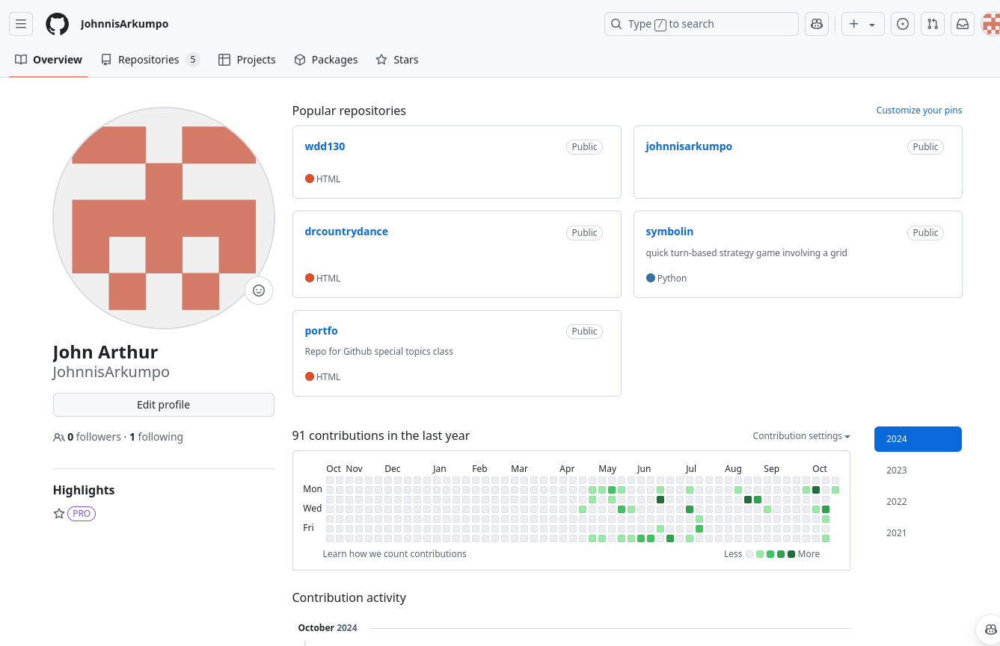

My name is John Arthur, and I'm a computer science major at BYU Idaho.
I'm a member of the Church of Jesus Christ of Latter Day Saints, I'm an avid programmer, and I've been working on multiple programming projects for years now. I am a bucks fan, and an nba enthusiast.
Temple
Two of the most important things in my life are God and my family. One of my favorite places to be is the temple, where the two meesth together very well. The temple has a lot of meaning to me as I firmly believe that inside everyone who is worthy can be sealed to their family for time and all eternity. Above is a picture of me and my Mom at the Chicago Illinois temple
Mission
I spent two years of my life serving a mission for my church in Rio de Janeiro, Brazil. These were two of the best years of my life, a time for me where i set aside everything from basketball to work to be able to serve others and teach them about Jesus Christ. It was a time that I'll treasure for the rest of my life.

Programming
I love programming, and I had the great oportunity to start learning programming as a young teenager. I picked up some skills in HTML, CSS, JavaScript, and SQLite. After I returned from my mission I knew that programming was what I wanted to do for a living, so I took up a computer science major at BYU Idaho and I've ejoyed it very much.